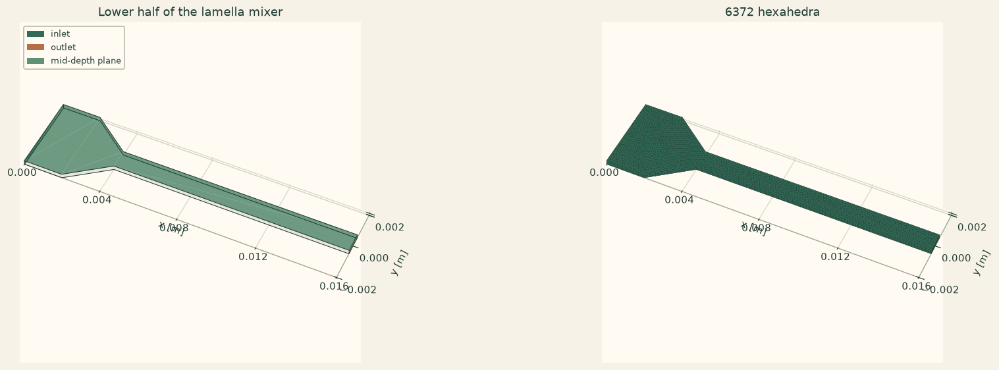

Docs › Examples › Lamella micromixer with hydrodynamic focusing
Microfluidics · 3D
Lamella micromixer with hydrodynamic focusing
Two liquids enter a microchannel as 2, 4 or 8 alternating lamellae, are squeezed four times thinner in a contraction and mix by diffusion.
Run locally with OneSimulation. The example downloads are free. Running them requires an activated runtime. Runtime Alpha 0.2.1a7 · CPython 3.13 on macOS (Apple Silicon), Ubuntu 22.04 (x86-64), and Windows x64. Installation and activation · View pilot plans. Scope of the reference checks.

What it computes
The lower half of the mixer is read from a STEP file and meshed with swept hexahedra. OneSimulation solves the 3D creeping flow with Taylor-Hood elements and the solute in the computed flow with quadratic elements, and evaluates the flow-weighted mixing index on cross-sections. The script that builds the STEP file comes with the notebook.
What it checks
The solute balance closes within 0.02 % to 0.3 %; the distance to 90 % mixing is 12.8, 6.2 and 3.8 mm for 2, 4 and 8 lamellae against 14.2, 5.5 and 2.8 mm from the depth-averaged plug-flow lamination law, and the mesh study moves it by 3 %.
Geometry
The notebook starts at the import of the CAD file lamella_mixer_focusing.step: STEP (AP242), readable by any CAD program, with the names of the faces that the boundary conditions use. Put it next to the notebook.

The geometry script
The script lamella_mixer_focusing_geometry.py builds the geometry with the CAD objects of OneSimulation and writes the file. Change a dimension there, run it, and run the notebook again.
"""Geometry of the OneSimulation example "Lamella mixer with hydrodynamic focusing".
Builds the lower half of a lamella micromixer with the CAD objects of OneSimulation: an inlet
chamber 4 mm wide and 2 mm long, a contraction over 2 mm to the mixing channel 1 mm wide and 12 mm
long; the channel is 0.5 mm deep, the file holds the 0.25 mm below the mid-depth plane. The part is
written to lamella_mixer_focusing.step with the faces inlet, outlet, wall (side walls), bottom and top
(the mid-depth plane).
"""
from onesim.cad.d2 import Profile
from onesim.cad.d3 import Prism
mm = 1e-3
outline = [(0, -2), (2, -2), (4, -0.5), (16, -0.5), (16, 0.5), (4, 0.5), (2, 2), (0, 2)]
sides = ["wall", "wall", "wall", "outlet", "wall", "wall", "wall", "inlet"]
mixer = Prism(
profile=Profile.polygon([(x * mm, y * mm) for x, y in outline], names=sides),
height=0.25 * mm,
)
mixer.save("lamella_mixer_focusing.step")The notebook
The complete notebook, cell by cell. Run it to produce the figures and the comparison printout.
In a microchannel the flow is laminar, and two liquids that enter side by side mix only by molecular diffusion across their interface - slowly, because the diffusion time grows with the square of the layer thickness \(s\): \(t\sim s^2/D\). Lamella mixers therefore split the two inlet streams into many thin alternating layers and, in addition, squeeze them in a contraction (hydrodynamic focusing). With \(N\) lamellae across a channel of width \(w\) the layer thickness is \(s=w/N\), and the length needed for mixing at the mean speed \(\bar U\) is
(W. Ehrfeld, K. Golbig, V. Hessel, H. Löwe, T. Richter, Ind. Eng. Chem. Res. 38, 1075-1082, 1999; V. Hessel, H. Löwe, F. Schönfeld, Chem. Eng. Sci. 60, 2479-2501, 2005). Doubling the number of lamellae shortens the mixer four times.
The mixer comes from the CAD file lamella_mixer_focusing.step, written by lamella_mixer_focusing_geometry.py: an inlet chamber 4 mm wide, a contraction to the mixing channel 1 mm wide and 12 mm long, 0.5 mm deep. The file holds the lower half below the mid-depth plane. The lamellae enter as a smooth concentration pattern \(c=\tfrac12\left(1+\cos(N\pi y'/W)\right)\) across the inlet of width \(W=4\) mm. The steady creeping flow and the convection-diffusion of the solute in it are
| face | flow | solute | |---|---|---| | inlet | fully developed duct profile, mean 0.1 mm/s | \(c=\tfrac12(1+\cos(N\pi y'/W))\) | | outlet | traction free | no diffusive flux | | top (mid-depth symmetry plane) | impermeable, shear free | no flux | | wall, bottom | no slip | no flux |
Reference. The solute that enters must leave (mass balance). The mixing must follow the lamination law: plotted over \(N^2\int dx/W\) the curves for different \(N\) collapse, and the depth-averaged plug-flow solution of the diffusion across the lamellae gives the scale.
import numpy as np
from onesim.cad.exchange import load
from onesim.materials import IsotropicSolid, NewtonianFluid
from onesim.meshing import Geometric, SweepMesher
from onesim.numerics import Numerics
from onesim.numerics.fem import FiniteElement, GalerkinAdvection, Lagrange, TaylorHood
from onesim.numerics.linear import SparseDirect
from onesim.numerics.nonlinear import Newton
from onesim.physics.heat_transfer import (
ConvectiveHeatTransfer,
FixedTemperature,
HeatFlux,
)
from onesim.physics.hydrodynamics import (
FixedVelocity,
FlowTraction,
FreeSlipLaw,
IncompressibleNavierStokes,
NoSlipWall,
WallShear,
fully_developed_inflow,
)
from onesim.results.derived import derived_field
from onesim.results.sampling import field_function
from onesim.simulation import Problem, Simulation
from onesim.visualization import plots, theme
theme.set()Geometry and mesh
SweepMesher meshes the bottom with quadrilaterals and sweeps them up to the mid-depth plane in three layers, thinner at the bottom; the quadrilaterals are 0.14 mm wide. The mesh study uses 0.2 mm.
mm = 1e-3
mixer = load("lamella_mixer_focusing.step")
faces = mixer.boundaries
meshes = {
size: SweepMesher(
source=faces.bottom, target_size=size * mm, layers=Geometric(3, ratio=1.5)
).generate(mixer)
for size in (0.20, 0.14)
}
mesh = meshes[0.14]
view = plots.Camera(elevation=50, azimuth=-65)
fig = plots.figure(1, 2, size=(16, 5))
plots.geometry(
mixer,
selection={
"inlet": faces.inlet,
"outlet": faces.outlet,
"mid-depth plane": faces.top,
},
labels=False,
camera=view,
title="Lower half of the lamella mixer",
ax=fig[0],
)
plots.mesh(
mesh,
groups=("all",),
legend=False,
camera=view,
title=f"{mesh.cell_count} hexahedra",
ax=fig[1],
)
plots.show()Flow
Water enters with the laminar duct profile; the Reynolds number in the mixing channel is 0.4.
water = NewtonianFluid(density=1000.0, dynamic_viscosity=1.0e-3)
flow = IncompressibleNavierStokes(domain=mixer.volume, material=water)
velocities = {}
for size, grid in meshes.items():
problem = Problem(
name="Lamella mixer: flow",
geometry=mixer,
physics=(flow,),
boundary_conditions=(
FixedVelocity(
boundary=faces.inlet,
physics=flow,
value=fully_developed_inflow(
grid,
faces.inlet,
mean_velocity=1e-4,
no_slip=faces.wall | faces.bottom,
),
),
FlowTraction(boundary=faces.outlet, physics=flow, value=(0.0, 0.0, 0.0)),
NoSlipWall(boundary=faces.wall | faces.bottom, physics=flow),
WallShear(boundary=faces.top, physics=flow, law=FreeSlipLaw()),
),
)
numerics = Numerics(
spatial=FiniteElement(element=TaylorHood()),
initial_guess={flow.velocity: (0.0, 0.0, 0.0)},
nonlinear_solver=Newton(
linear_solver=SparseDirect(),
absolute_tolerance=1e-20,
relative_tolerance=1e-9,
),
)
velocities[size] = (
Simulation(problem=problem, mesh=grid, numerics=numerics)
.solve_stationary()
.field(flow.velocity)
)Solute
A small molecule, \(D=2\cdot10^{-9}\) m²/s, follows the same convection-diffusion equation as temperature. It is solved for 2, 4 and 8 lamellae on the finer mesh and for 4 lamellae on the coarser one.
diffusivity, inlet_width = 2e-9, 4 * mm
solute = IsotropicSolid(
density=1.0,
specific_heat_capacity=1.0,
thermal_conductivity=diffusivity,
youngs_modulus=1.0,
poisson_ratio=0.3,
thermal_expansion_coefficient=0.0,
)
patterns = {
2: lambda y: 0.5 * (1 + np.cos(2 * np.pi * (y / inlet_width + 0.5))),
4: lambda y: 0.5 * (1 + np.cos(4 * np.pi * (y / inlet_width + 0.5))),
8: lambda y: 0.5 * (1 + np.cos(8 * np.pi * (y / inlet_width + 0.5))),
}
cases = [(lamellae, 0.14) for lamellae in patterns] + [(4, 0.20)]
concentrations = {}
for lamellae, size in cases:
transport = ConvectiveHeatTransfer(
domain=mixer.volume, material=solute, velocity=field_function(velocities[size])
)
problem = Problem(
name="Lamella mixer: solute",
geometry=mixer,
physics=(transport,),
boundary_conditions=(
FixedTemperature(
physics=transport, boundary=faces.inlet, value=patterns[lamellae]
),
HeatFlux(physics=transport, boundary=faces.all - faces.inlet, value=0.0),
),
)
numerics = Numerics(
spatial=FiniteElement(
element=Lagrange(order=2), convection=GalerkinAdvection()
),
linear_solver=SparseDirect(),
)
concentrations[lamellae, size] = (
Simulation(problem=problem, mesh=meshes[size], numerics=numerics)
.solve_stationary()
.field(transport.temperature)
)Results
The solute flow through a face is \(\int c\,u_x\,dA\). On cross-sections from the inlet to the outlet the flow-weighted standard deviation \(\sigma\) of the concentration gives the mixing index \(1-\sigma/\sigma_0\), with \(\sigma_0\) its value at the inlet. For comparison, in plug flow through a channel of width \(W(x)\) the pattern \(\cos(N\pi y/W)\) decays by diffusion as \(\exp\!\big(-\pi^2N^2D\int_0^x dx'/(\bar U_0W_0\,W(x'))\big)\), since the flow rate \(\bar U W\) is the same on every cross-section (\(\bar U_0=0.1\) mm/s and \(W_0=4\) mm at the inlet).
flux = (
lambda key, face: derived_field(
velocities[key[1]],
lambda u, points, c=concentrations[key]: np.ravel(c.evaluate(points)) * u[:, 0],
name="solute_flux",
unit="mol/m^2/s",
)
.integrate(boundary=face)
.value
)
width_at = lambda x: np.interp(
x, [0.0, 2 * mm, 4 * mm, 16 * mm], [4 * mm, 4 * mm, 1 * mm, 1 * mm]
)
eta, z = np.meshgrid(np.linspace(-0.49, 0.49, 50), np.linspace(0.005, 0.245, 13) * mm)
stations = np.linspace(0.05, 15.95, 80) * mm
fine = np.linspace(0.0, 16 * mm, 3201)
path = np.interp(
stations,
fine,
np.concatenate(
([0.0], np.cumsum(np.diff(fine) / width_at(0.5 * (fine[1:] + fine[:-1]))))
),
)
plug = {
lamellae: 1
- np.exp(-np.pi**2 * lamellae**2 * diffusivity * path / (1e-4 * inlet_width))
for lamellae in patterns
}
mixing = {}
for key, c in concentrations.items():
points = [
np.column_stack((np.full(eta.size, x), (eta * width_at(x)).ravel(), z.ravel()))
for x in stations
]
weights = [velocities[key[1]].evaluate(p)[:, 0] for p in points]
spread = np.array(
[
np.sqrt(np.average((v - np.average(v, weights=w)) ** 2, weights=w))
for v, w in ((np.ravel(c.evaluate(p)), w) for p, w in zip(points, weights))
]
)
mixing[key] = 1 - spread / spread[0]
reach = {key: np.interp(0.9, curve, stations) for key, curve in mixing.items()}
print(
" lamellae mesh [mm] solute in solute out balance x(90 % mixed) [mm] plug flow [mm] mixing at outlet"
)
for key in cases:
inflow, outflow = flux(key, faces.inlet), flux(key, faces.outlet)
print(
f"{key[0]:6d} {key[1]:12.2f} {inflow:12.4e} {outflow:12.4e} {outflow / inflow - 1:+10.1e} {1e3 * reach[key]:15.2f}"
f" {1e3 * np.interp(0.9, plug[key[0]], stations):16.2f} {mixing[key][-1]:17.4f}"
)
print(
f"\nmesh study, 4 lamellae: 90 % mixed at {1e3 * reach[4, 0.20]:.2f} mm ({meshes[0.20].cell_count} hexahedra) and "
f"{1e3 * reach[4, 0.14]:.2f} mm ({meshes[0.14].cell_count} hexahedra)"
)Figure
The concentration on the mid-depth plane for 4 and 8 lamellae, the mixing index along the mixer with the plug-flow estimate, and the same over \(N^2\int dx/W\), where the lamination law makes all curves one.
fig = plots.figure(
layout=[["four", "four"], ["eight", "eight"], ["mixing", "collapse"]], size=(15, 13)
)
for panel, lamellae in (("four", 4), ("eight", 8)):
plots.surface(
concentrations[lamellae, 0.14],
boundary=faces.top,
limits=(0.0, 1.0),
contours=6,
subdivisions=2,
aspect=1.0,
label="concentration",
title=f"{lamellae} lamellae: concentration on the mid-depth plane",
ax=fig[panel],
)
plots.line(
1e3 * stations,
{f"N = {lamellae}": mixing[lamellae, 0.14] for lamellae in patterns},
reference={f"N = {lamellae}": plug[lamellae] for lamellae in patterns},
points={"N = 4, coarser mesh": (1e3 * stations[::5], mixing[4, 0.20][::5])},
vlines={"end of the contraction": 4.0},
ylimits=(0.0, 1.02),
xlabel="distance from the inlet x [mm]",
ylabel="mixing index 1 - σ/σ0",
title="Mixing along the mixer: simulation (solid), plug flow (dashed)",
legend="lower right",
ax=fig["mixing"],
)
plots.line(
y={
f"N = {lamellae}": (lamellae**2 * path, mixing[lamellae, 0.14])
for lamellae in patterns
},
reference={"plug flow": (64 * path, plug[8])},
scale="logx",
ylimits=(0.0, 1.02),
xlabel="N² ∫ dx / W",
ylabel="mixing index 1 - σ/σ0",
title="Lamination law: one curve for all N",
legend="upper left",
ax=fig["collapse"],
)
plots.show()Going further
Make the contraction stronger in lamella_mixer_focusing_geometry.py and write the STEP file again: the focusing ratio enters the mixing length squared. Raise the flow rate and the mixer must grow in proportion; a larger diffusivity (a smaller molecule or a warmer liquid) shortens it.